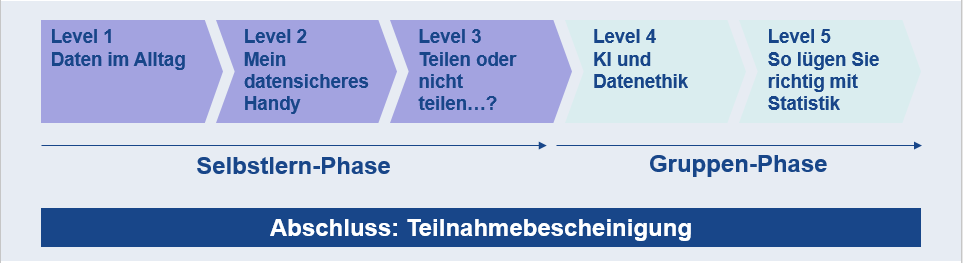

Die Data Awareness Rallye
In fünf Leveln von null Ahnung zu mehr Datenbewusstsein
Toolbeschreibung
Im Projekt zum Erwerb von Data Literacy an der Hochschule Niederrhein (PEDaL HN) wurde ein dreistufiges Kompetenzmodell zum Erwerb von Datenliteralität entwickelt, bei dem fächerübergreifende und fachspezifische Elemente ineinandergreifen. Die Data Awareness Rallye bildet die erste Stufe dieses Modells und soll bei den Teilnehmenden ein grundlegendes Bewusstsein für Daten fördern (siehe Abschnitt zum Kompetenzerwerb), das eine Grundlage für den Erwerb von Data Literacy im Studium und in den weiteren Angeboten von PEDaL darstellt. Die Rallye richtet sich daher primär an Erstsemesterstudierende im Bachelorstudium. Der benötigte Arbeitsaufwand zum Abschluss der Rallye entspricht einem Creditpoint, also etwa 25 Stunden, und verteilt sich auf acht Wochen. Im Angebot einer Hochschule kann das Format beispielsweise in Methodenmodulen, im Wahlpflichtbereich, als Bonusangebot in Lehrveranstaltungen oder im Ergänzungsbereich eingebunden werden.

Der Kurs verteilt sich auf zwei Phasen: Die Level 1 bis 3 werden im Selbststudium auf der Lernplattform Moodle absolviert. Die Level 4 und 5 finden in Form von Workshops statt, die digital oder in Präsenz abgehalten werden können.
Stand März 2023 haben sich an der Hochschule Niederrhein rund 1.200 Studierende aus sechs von insgesamt zehn Fachbereichen zur Rallye angemeldet. Die Abschlussquote liegt bei durchschnittlich 50 Prozent.
Voraussetzungen & Zielgruppen
Die Data Awareness Rallye wurde speziell für Erstsemesterstudierende im Bachelorstudium entwickelt, die laut Ridsdale et al. (2015) inhaltlich noch nicht so stark in der Denkweise ihres eigenen Faches verankert sind. Die Rallye geht gezielt auf die Lebenswelt dieser heterogenen Studierendengruppe ein, um ein Problembewusstsein für das Thema Daten zu schaffen, welches im weiteren Verlauf des Studiums fachspezifisch vertieft wird. Es werden keinerlei Vorkenntnisse der Teilnehmenden vorausgesetzt.
Um die Rallye anzubieten, ist ein Lernmanagementsystem (LMS) wie Moodle oder eine vergleichbare Lernplattform erforderlich. Idealerweise wird das H5P-Plug-in verwendet, damit die bestehenden Elemente einfach importiert werden können. Durch die Workshops zu Level 4 und 5 entsteht für einen Zeitraum von etwa drei Wochen ein erhöhter Personalbedarf, der durch studentische DatenPat:innen (Tutor:innen, die die Rallye selbst absolviert haben) gedeckt werden kann.
Kompetenzen
Nach Abschluss der Rallye sind die Studierenden in der Lage, die Chancen und Risiken der Erhebung und Nutzung von Daten begründet zu reflektieren, damit sie als mündige Bürger:innen in einer zunehmend digitalisierten Welt planvoll mit ihren persönlichen Daten sowie mit Daten im Allgemeinen umgehen und sie im jeweiligen Kontext bewusst einsetzen und hinterfragen können. Darüber hinaus ermöglicht die Rallye sowohl den Teilnehmenden als auch den DatenPat:innen den Erwerb weiterer, fächerübergreifender Kompetenzen, etwa in den Bereichen Teamwork, Moderation, Präsentation oder Konfliktmanagement.
Lerninhalte & Methoden
Die Rallye besteht aus fünf Leveln, dessen Inhalte auf das oben formulierte Lernergebnis einzahlen. Nachfolgend werden einige dieser Inhalte exemplarisch aufgelistet.
In Level 1 „Daten im Alltag“ erleben die Studierenden unter anderem anhand eines individuellen Datentracking-Sheets 24 Stunden lang, an welchen Stellen im Alltag sie welche Daten hinterlassen. In Level 2 „Mein datensicheres Handy“ finden sie mithilfe der Cookie-Challenge heraus, wie ihre Internetnutzung durch Tracker und Cookies ausgewertet wird und wie sie dies vermeiden können. In Level 3 „Teilen oder nicht teilen?“ werden die Studierenden angeleitet, anhand von Fallbeispielen nachzuvollziehen, wie soziale Medien durch die Verbreitung von Fake News und den Einsatz von Bots unsere Wahrnehmung beeinflussen können. Level 4 behandelt das Thema „Künstliche Intelligenz und Datenethik“. In einem simulierten Bürger:innenentscheid entwickeln die Studierenden Argumente für oder gegen die Einführung eines KI-basierten Videoüberwachungssystems in einer fiktiven Kreisstadt. Abschließend reflektieren die Teilnehmenden in Level 5 „So lügst du vollkommen richtig mit Statistik“ auf Basis eines Gewissensbits (Class et al., 2023) die ethischen Implikationen der statistischen Aufbereitung und visuellen Darstellung von Daten.
Um das Thema der Data Awareness Rallye zielgruppengerecht aufzubereiten und eine höhere Aktivierung zu erreichen, wurden unter Heranziehung des Spielertypen-Frameworks von Marczewski (2015) Gamification-Elemente in den Kurs integriert. Zusätzlich flossen Aspekte von Decis und Ryans (2000) Selbstbestimmungstheorie der Motivation in die Konzeption ein. Indem die methodisch-didaktische Ausgestaltung und der strukturelle Aufbau der Rallye die drei psychologischen Grundbedürfnisse (Kompetenz, Autonomie und soziale Einbindung) berücksichtigen, wird die intrinsische Motivation der Studierenden aktiviert und ein lernförderliches Umfeld geschaffen. Bei der Entwicklung und der Auswahl der Inhalte wurden studentische DatenPat:innen einbezogen, die bei der Durchführung der Rallye als Peer-Tutor:innen fungieren. Durch diesen hohen Anteil an studentischer Partizipation in ihrer Entstehung ist die Rallye inhaltlich nah an der Lebensrealität Studierender ausgerichtet, was wiederum zu den Erfolgsfaktoren der Data Literacy Education zählt (Ridsdale et al., 2015).
Erkenntnisse & Erfahrungen
Erfahrungen bei der Einbindung an der Hochschule Niederrhein
Anreize schaffen für Studierende. Zu Beginn eines jeden Semesters wird die Rallye in thematisch verwandten Lehrveranstaltungen vorgestellt, wodurch den Studierenden die Relevanz des Angebots signalisiert wird. Weiterhin machen der zielgruppengerechte Gamifizierungsansatz und die Bescheinigung der erfolgreichen Teilnahme die Rallye für Studierende attraktiv.
Lehrenden entgegenkommen. Um es Lehrenden so leicht wie möglich zu machen, die Rallye an ihre Veranstaltungen zu koppeln, werden vorformulierte Textbausteine für ihre Kursbeschreibungen zur Bewerbung bei den Studierenden zur Verfügung gestellt und die Verwaltung sowie Betreuung der Teilnehmenden in einem eigenen Rallye-Moodle-Raum übernommen.
Hochschulpolitisches Gewicht und Kontakte nutzen. Um die Rallye an der Hochschule Niederrhein in die Lehre einzubinden, wurde das Angebot auf zwei Wegen beworben. Da die Förderung von Zukunftskompetenzen Bestandteil des Hochschulentwicklungsplans der HSNR ist und der Vizepräsident für Studium und Lehre die offizielle Projektleitung innehatte, konnte über die Hochschulleitung an die Dekane verschiedener Fachbereiche herangetreten werden. Gleichzeitig wurden Kontakte des fachbereichsübergreifenden Projektteams genutzt, um die Rallye in thematisch einschlägige Lehrveranstaltungen diverser Fachbereiche einzubinden.
Drip Content versus Self-pacing. Hinsichtlich der Bereitstellung der Rallye-Inhalte auf Moodle wurden bisher zwei Möglichkeiten getestet. Im Self-paced-Modus bearbeiten die Studierenden alle Inhalte in ihrem individuellen Tempo innerhalb einer bestimmten Zeitspanne, während im Drip-Content-Modus die Level nacheinander freigeschaltet und Inhalte fristgebunden bearbeitet werden. Zweiteres hat sich bezüglich der Einschätzung des verbleibenden Arbeitsaufwands aus Studierendenperspektive als geeigneter herausgestellt.
Zeitlicher Rahmen. Erfahrungsgemäß ist es sinnvoll, die Rallye gleich zu Beginn des Semesters anzusetzen, damit sie vor der Prüfungsphase abgeschlossen ist. Der anfängliche Umfang von acht Wochen wurde inzwischen auf zehn Wochen erhöht und zwei organisatorische „Pufferwochen“ eingeplant, um den Arbeitsaufwand sowohl für die Personen, die die Rallye organisieren, als auch für die Teilnehmenden zu entzerren.
Nachnutzung an der Universität Duisburg-Essen
Seit dem Sommersemester 2022 wird die Data Awareness Rallye auch an der Universität Duisburg-Essen (UDE) angeboten. Die größte Herausforderung war die Integration der Kurselemente in das Moodle der UDE. Da unterschiedliche Moodle-Versionen an den Hochschulen genutzt wurden, wurde der Kurs in eine Moodle-Testinstanz importiert und einzelne H5P-Dateien sowie Text- und Bildelemente wurden in das Produktivsystem kopiert. Der Kurs ließ sich mit Ausnahme des Kursformats1 vollständig nachbilden. Im Sommersemester 2022 wurde die Rallye zunächst kooperativ angeboten: Studierende der HSNR und der UDE nutzten das hochschulspezifische LMS, um sich die Kursinhalte von Level 1 bis 3 zu erarbeiten und die Lösungen zu den Abgaben für Level 4 und 5 einzureichen; die Onlineworkshops zu Level 4 und 5 wurden hochschulübergreifend umgesetzt. Die Kooperation ermöglichte dem Lehrenden-Team der UDE, sowohl einen Einblick in das didaktische Vorgehen zu gewinnen als auch die Kapazitäten für die Workshop-Umsetzung bestmöglich auszulasten.
Im Rahmen der Universitätsallianz Ruhr kooperiert die UDE unter anderem zur Data Literacy Education mit der Ruhr-Universität Bochum (RUB) und der Technischen Universität Dortmund (TUDo). Durch diese Zusammenarbeit wurde die Rallye auch an der RUB und der TUDo vorgestellt; die TUDo plant eine Integration der Rallye-Level 1 bis 3 in ein bestehendes Kursformat. Zudem wird die Rallye an der UDE im Sommersemester 2023 für RUB-Studierende geöffnet, um im Anschluss anhand der Teilnehmendenaktivität und des Dozierendenaufwands zu prüfen, ob das Format ab Wintersemester 2023/24 an der RUB angeboten wird.
Insgesamt wird deutlich, dass offene Lehr-Lern-Materialien zu Synergieeffekten führen, die die Lehre hochschulübergreifend inhaltlich und organisatorisch bereichern. Ein Austausch mit der entwickelnden Hochschule erleichtert dabei die Integration immens. Gleichzeitig kann die nachnutzende Hochschule die Weiterentwicklung des Materials und der betreffenden Kursangebote befördern.
Hilfreiche Links
Die Rallye steht als OER unter der Lizenz CC BY-SA 4.0 auf ORCA.nrw unter folgendem Link zur Verfügung: Data Awareness Rallye (LINK folgt)
Projektseiten:
- PEDaL HN: https://www.hs-niederrhein.de/data-literacy
- DataCampus UDE: https://www.uni-due.de/ub/datacampus (Zugriff derzeit nur via https://web.archive.org/web/20220730201415/https://www.uni-due.de/ub/datacampus)
Autorinnenprofile
Christina Grieb-Viglialoro ist promovierte Geisteswissenschaftlerin und wissenschaftliche Mitarbeiterin im Arbeitsbereich Hochschuldidaktik der Hochschule Niederrhein. Sie koordiniert das Projekt zum Erwerb von Data Literacy (PEDaL HN) und arbeitet in dem fächerübergreifenden BMBF-Projekt „Public Understanding von KI durch transdisziplinäre Lehre“.
Elske Schönhals ist promovierte Naturwissenschaftlerin und wissenschaftliche Mitarbeiterin im Arbeitsbereich Hochschuldidaktik an der Hochschule Niederrhein. Von August 2020 bis Juli 2022 koordinierte sie das Projekt PEDaL HN und ist nun stellvertretende Projektleiterin im fächerübergreifenden BMBF-Projekt „Public Understanding von KI durch transdisziplinäre Lehre“. Sie ist Entwicklerin der Data Awareness Rallye, liebt es, Neuland zu betreten und den Boden für gute Lehre zu bereiten.
Christina Kläre (ORCID ID 0000-0001-6651-984X) studierte Informations- und Wirtschaftswissenschaften und arbeitet seit 2016 als Fachreferentin in der Universitätsbibliothek der Universität Duisburg-Essen (UDE). Seit 2019 koordiniert sie den DataCampus UDE – das im Rahmen der Linie Data Literacy Education.nrw bis Juni 2023 geförderte Projekt wurde im Anschluss verstetigt und adressiert fächerübergreifend den Auf- und Ausbau von Formaten zur Förderung von (primär basalen) Datenkompetenzen Studierender der UDE.
Förderhinweise: Das Projekt PEDaL HN und das Projekt DataCampus UDE werden durch das Ministerium für Kultur und Wissenschaft des Landes Nordrhein-Westfalen in Kooperation mit dem Stifterverband in dem Programm „Data Literacy Education.nrw“ gefördert.

https://docs.moodle.org/401/de/Kursformate↩︎